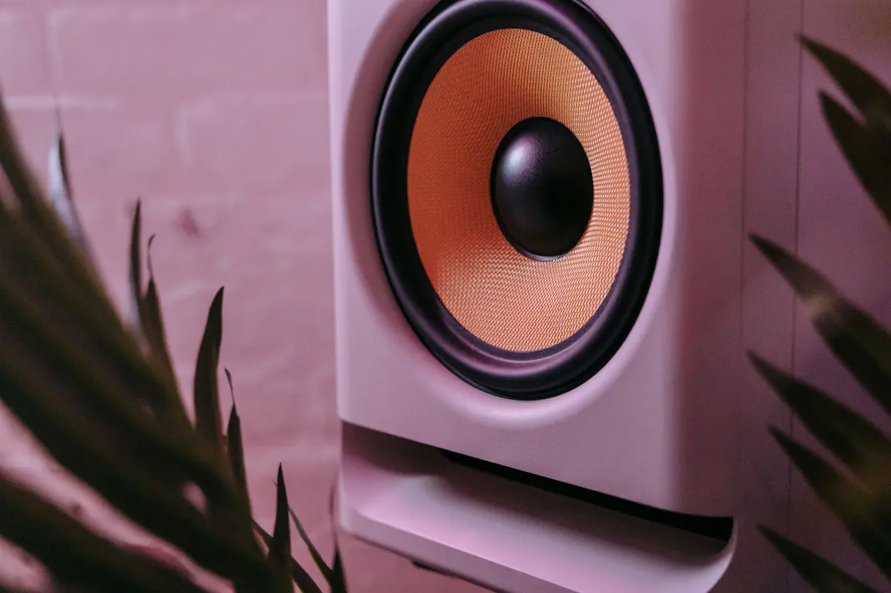
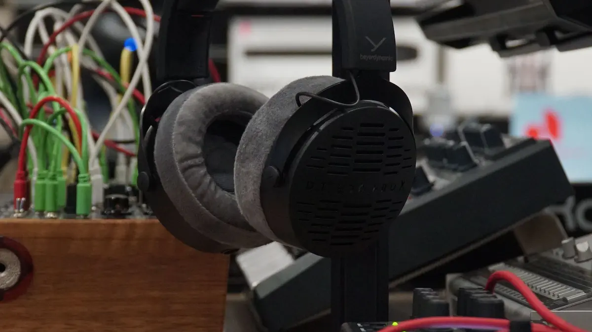
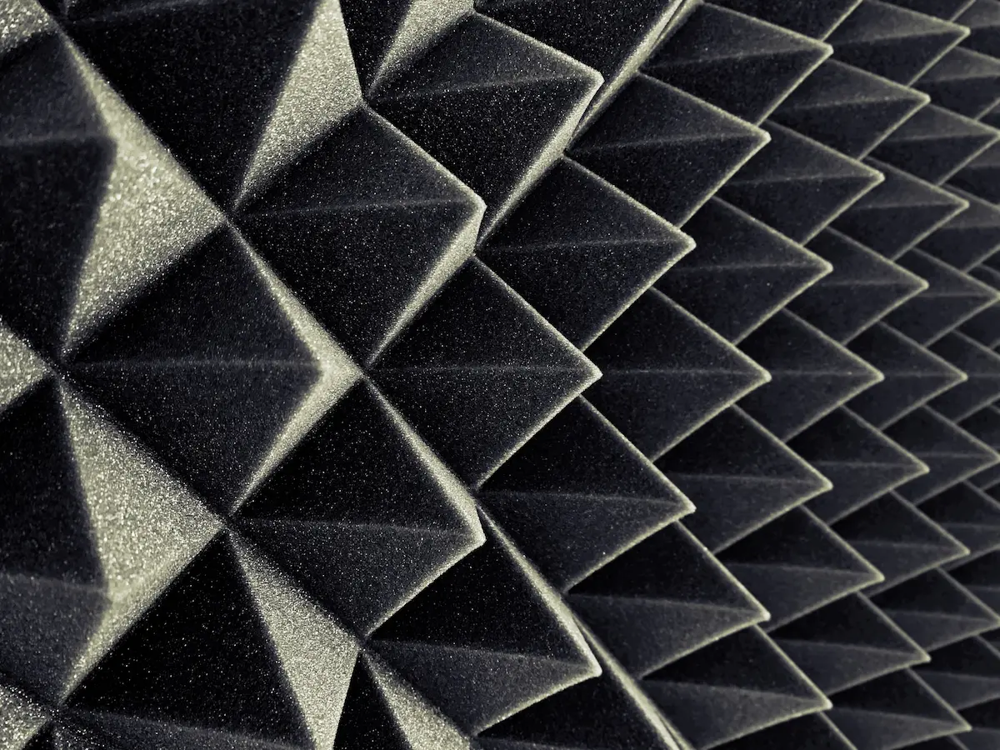

Monitores de Campo Cercano

Diseñados para una respuesta en frecuencia plana, a diferencia de los parlantes comerciales que exageran graves o agudos. Se ubican cerca del punto de escucha para reducir la influencia del rebote de la sala
La monitorización es la etapa que garantiza una escucha fiel y sin engaños. Permite tomar decisiones precisas sobre el balance, la ecualización y la espacialidad de la mezcla en un entorno controlado.

Diseñados para una respuesta en frecuencia plana, a diferencia de los parlantes comerciales que exageran graves o agudos. Se ubican cerca del punto de escucha para reducir la influencia del rebote de la sala

La herramienta clave para juzgar detalles finos y paneos estéreo. Su diseño abierto permite una imagen espacial más natural y reduce la fatiga auditiva durante sesiones prolongadas.

El control de los rebotes y resonancias de la habitación. El uso de paneles absorbentes en los puntos de primera reflexión y trampas de graves evita cancelaciones que distorsionen lo que realmente suena.